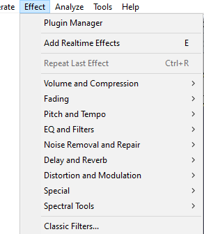

Effect Menu
You can download many free plugins for Audacity from our website. Plugins always appear underneath the divider in the Effect menu. Released builds of Audacity include sample Nyquist effects.
| To apply an effect, select part or all of the track(s) you want to modify, and select the effect from the menu. |
- 
Menu layout
The default layout for the Effect menu is to group the effects by their functionalty.
Other options are available:
- Sorted by Effect Name: Effects are listed in one long menu sorted by effect name, built-in effects above the divider then plugins below the divider.
- Sorted by Publisher and Effect Name: Effects are listed in one long menu, built-in effects sorted by name above the divider then plugins sorted by publisher then name below the divider.
- Sorted by Type and Effect Name: Effects are listed in one long menu, built-in effects sorted by name above the divider then plugins sorted by type then name below the divider.
- Grouped by Publisher: Effects are grouped by effect publisher, with effects in each group in a submenu. The Audacity built-in effects group is above the divider and groups for plugins are below the divider.
- Grouped by Type: Effects are grouped by effect type, with effects in each group in a submenu. The Audacity built-in effects group is above the plugins groups..
These can be set in Effects Preferences.
Using Effects
Titles which end in an ellipsis (...) will bring up a dialog asking you for more parameters.
All effects that have a dialog let you hear a preview of the audio as modified by the effect before you apply the effect to the waveform.
- Effects have a Preview button - press this to listen if the current effect settings produce what you want, and if not, change the settings then Preview again. Press to apply the effect to the waveform.
|
Please note that some effects can make the peak levels of waveforms substantially higher. |
| The Macros Palette, accessed by is a good way of having a set of favorite presets for the effects you regularly use. |
Plugin Manager
Selecting this option from the Effect Menu (or the Generate Menu or Analyze Menu) takes you to a dialog which enables you to load and unload Effects (and Generators and Analyzers) from Audacity. This enables you to customize your Effect Menu making it shorter or longer as required. For details see Plugin Manager.
By default all the Built-in effects are loaded in Audacity.
See also this list of available Nyquist effect plugins on the Audacity Wiki, that you can easily download and add to Audacity.
Backing up or transferring settings
To see how to backup your settings, last used and any user presets you have saved using the button in each effect's dialog, see this page.
Repeat Last Effect Ctrl +R
Using this command from the Effect menu will repeat the last effect that you used at the same settings. For quick access to the last used effect, you can use Ctrl + R to repeat it the same settings.
| For effects that you use often you can use Keyboard Preferences to set up keyboard shortcuts for those effects. |